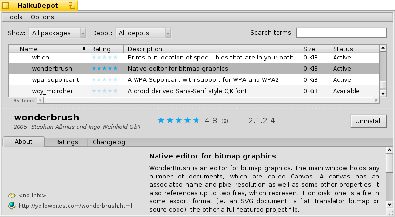
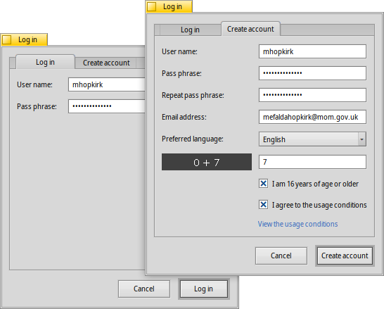
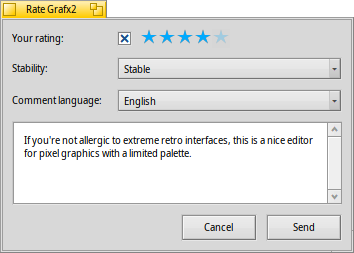

| インデックス |
| フィルター リスト 情報エリア ツールと表示メニュー ユーザーアカウントの作成 評価とコメント 診断ログ |
 HaikuDepot
HaikuDepot
| Deskbar: | ||
| 場所: | /boot/system/apps/HaikuDepot | |
| 設定ファイル: | ~/config/settings/HaikuDepot/main_settings ~/config/cache/HaikuDepot/ - キャッシュされたアイコン、スクリーンショット、説明など。 |
HaikuDepot は、ソフトウェアパッケージ管理の中心となるアプリケーションです。HaikuDepot により、パッケージリポジトリを経由して一覧や検索ができ、パッケージのインストールおよびアンインストールができます。初期設定では、HaikuDepot は、"おすすめパッケージ (Featured packages)" リスト、つまり、多くのユーザーが興味を持つと考えられるソフトウェアの一覧を表示します。
2番めのタブは、 を表示します。表示は小さいアイコンとより多くの情報が列に配置されるように変わります:

 フィルター
フィルター
一番上には、その下の使用可能なパッケージのリストをフィルタリングするいくつかの手段があります。
ポップアップメニューは、"オーディオ" や "ゲーム" のような特定のカテゴリーにリストを制限します。
テキストフィールドは、リストを入力された文字列 (スペース区切り) をパッケージ名または説明に含むパッケージにフィルタリングします。
メニューバーの メニューは、どのリポジトリが問い合わせされるかを決定します。"ローカル (Local)" パッケージは、オンライン以外のどこかからインストールされたものです。それらはおそらく、USB スティックからか、どこかのウェブサイトからのダウンロードか、または自分でビルドしたパッケージでしょう。
リスト
Tracker ウィンドウと同じく、コンテキストメニューから表示する列を選択するには、列見出しで右クリックします。左クリックは、列に応じてリストを並び替えます。もちろん、列を新しい位置にドラッグすれば列を再配置できます。
パッケージの状態 (status) 列は、以下のうちの 1 つを取ります。
: パッケージはインストール済みで、いつでも利用できます。
: パッケージがリポジトリ内に存在し、ダウンロードおよびインストールができます。ほかのパッケージに何らかの依存関係があれば、インストール中にユーザーに知らされ、必要なものをすべてダウンロード / インストールするかを選択させます。
: 保留中… (Pending) は、ダウンロード / インストールが待ち行列に入っているパッケージについて表示されます。パッケージがダウンロードされている間、パーセント表示で進捗表示されます。
パッケージリストと情報エリアの間の点線をつかめば、パッケージリストを縦方向にリサイズできます。
情報エリア
下側は、その上のリストで現在選択されているパッケージの情報を表示するエリアです。
パッケージ名、作者、評価、およびバージョンの右側にボタンがあります。それは、パッケージの現在の状況に応じて、パッケージを またはします。パッケージがすでにインストールされている場合は、ここにアプリケーションを ための追加のボタンを見つけるでしょう。
その下に 、パッケージについて (About)、評価 (Ratings)、変更履歴 (Changelog) 、および内容 (Contents) の 4 つのタブがあります。
最初のタブには、パッケージの詳しい説明と、スクリーンショット、および利用可能ならパッケージされたソフトウェアをメンテしているチームへの連絡用アドレスと URL が表示されています。スクリーンショットのサムネールをクリックすると、新しいウィンドウ内にフルサイズで開くでしょう。
2番目のタブには、利用可能であれば、ユーザーの評価とコメントが表示されます。

左は統計で、どれだけのユーザーから星の数 (1 ～ 5) を得られたかを示しています。
中央には、ユーザーのニックネーム、ユーザーがパッケージに与えた星の数、および評価またはコメント対象にしたバージョンとともにコメントがあります。さらに下に、自身でパッケージを評価する方法について詳しい情報が見つかります。
パッケージのメンテナーが情報を提供していれば、ここでは、パッケージのこれまでリリースされてきたすべてのバージョンの詳しい履歴を表示します。
最後のタブは、パッケージが含んでいるファイルとフォルダーをすべて表示します。これは、ダウンロード済のパッケージに対してのみ機能します。
ツールと表示メニュー
ウィンドウの一番上にある メニュー内に、 する項目があります。これは、リポジトリから利用可能なすべてのパッケージの最新リストを要求します。
もうひとつの項目は、 です。それは、リポジトリプレファレンスを開き、リポジトリの追加 / 削除、または有効化 / 無効化を行います。
は、ソフトウェアの更新 (SoftwareUpdater) を開き、更新されたパッケージの検索とインストールを行います。
の下では、 および、 をパッケージリスト内に表示することも選択できます。これらは通常のユーザーには興味のあるものではなく、リストをごちゃごちゃさせるだけです。しかし、パッケージのライブラリやヘッダーなどを必要とする人たちにとっては、それらに依存するプログラムの開発やコンパイルのために重要となります。
さらに興味深いものは、 と、 だけを表示するオプションです。
ユーザーアカウントの作成
パッケージを評価できるようにするには、Haiku Depot Server にユーザーアカウントを作成する必要があります。そこはすべてのパッケージを提供し、評価とユーザーコメントを記録しています。HaikuDepot アプリケーション内から、メニューバーの右端のメニューをクリックするとアカウントを作成できます。メニューには現在のステータス が表示されています。 を選択すると、タブが 2 つあるウィンドウが開きます。ひとつは (いったんこれらが揃えば) ログインするためのユーザー名とパスワードの入力用で、もうひとつは新規アカウントの作成用です。
アカウントの作成には以下が必要となります。
- 特殊文字のない、すべて小文字のユーザー名を使用してください。
- 8 文字以上の長さで、2 文字以上の大文字と、2 文字以上の数字を含むパスワードを使用してください。
- 有効な email アドレスを入力してください (パスワードを忘れた場合、新しいパスワードが必要なら送信されます)。
- キャプチャを解いてください。
- ユーザーが16歳以上で、下にリンクされた使用条件を読んだことを確認したら、チェックマークを付けます。
ログイン後、HaikuDepot の上右端のメニューは、 となるでしょう。ここで、() 内はユーザー名を表示しています。メニューは直ちに、 または を提供します。
評価とコメント
アカウントを作成してログイン後、パッケージを評価してコメントを残せます。望むなら、マウスをパッケージの情報エリアにある評価の星のうえに重ねるだけで、 ボタンに変化します。それをクリックして評価ウィンドウを開きます。
ここで、マウスを星の上に移動して光らせてから、評価を選択します。また、アプリケーションの安定性を判定するためにレベル数値からの選択もできます。また、追加コメントの言語を指定できます。コメントを意味あるものにするためには、評価しようとするアプリケーションの特徴やバグ、癖に慣れるためにしばらく使うべきです。それから、"the next great American novel" は書かないでください…短く、親切で礼儀正しいコメントにしてください :)
をクリック後、データはサーバーへ送られます。変更を見る前に、 メニューから を選ばないといけないかもしれません。
いつでも評価ウィンドウに戻ってコメントの編集とパッケージの再評価ができます。また、 チェックボックスを無効にすれば、ほかのユーザーにコメントを見せないようにできます。
診断ログ
HaikuDepot が使用されるとき、ネットワークおよびローカルサービスと対話します。時々アプリケーションが作成されたときには予想されていなかった方法で、物事は悪くなることがあるかもしれません。そのような場合、エラーメッセージは非常に曖昧なものになるかもしれません。与えられた問題を診断するために、HaikuDepot はアプリケーションの動作のログを提供できます。
ログを見てより掘り下げた情報を得るようにエラーメッセージが提案するかもしれません。または、問題をHaiku bug tracking system に提出するときに、ログを提供するように要求されるかもしれません。
診断ログを見るには、HaikuDepot をターミナルから起動させる必要があります:
HaikuDepot -v debug
コマンドは、-v フラグを使って、診断ログの冗長性を制御します。使用できる値は、off, info, debug および trace です。off を使用すると、ほんの少しの量のログを出力します。一方、trace は、最大の詳細なログを出力します。
HaikuDepot が起動して、アプリケーションと対話するとき、ターミナルウィンドウ内にテキストがスクロールするのを見るでしょう。これが診断ログです。